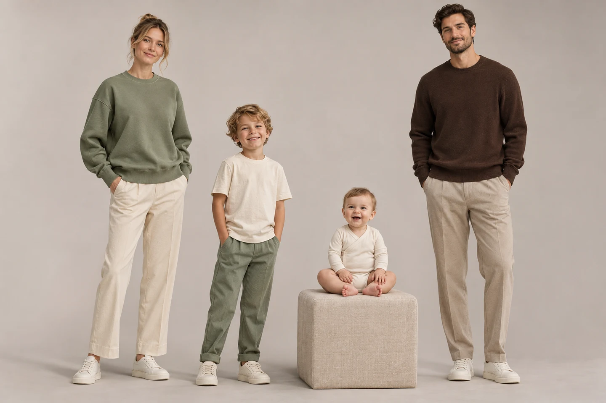

FamilyLook
Studio
Dobierz fasony, kolory i nadruki dla całej rodziny. Uzupełnij pomiary i przygotuj dokumentację dla pracowni.

Wizualizacja inspiracyjna — nie zdjęcie gotowego produktuSkonfiguruj swój zestaw
Każda osoba otrzymuje własny fason, rozmiar i kartę wymiarów. Paleta i nadruk mogą pozostać wspólne dla całej rodziny.
Do 1 MB. Plik działa tylko w bieżącej sesji przeglądarki. SVG jest wyświetlane jako obraz, nie jako kod strony.
Nadruk jest osobną, wymienną warstwą. Dopasowanie pokazuje podgląd; położenie produkcyjne zatwierdza wykonawca.
Rysunki techniczne ubrań · przód / tył
Studio pomiarów krawieckich
Uzupełniaj pomiary osobno dla każdej osoby. Instrukcja zmienia się wraz z wybraną miarą, a lista pól wymaganych zależy od rodzaju ubrania.
Gdzie przyłożyć miarkę?
Wybierz pozycję po lewej, aby zobaczyć instrukcję i orientacyjną linię pomiarową.
Miękka miarka, bez butów, cienkie ubranie, wyprostowana lecz swobodna postawa. Taśma poziomo przy obwodach, bez ucisku. Pomiar wykonaj dwa razy i zanotuj rzeczywistą wartość — nie zgaduj.
U niemowląt pomiary wykonuje dorosły, z zachowaniem komfortu dziecka. Nie zaciskaj taśmy przy szyi ani nie wykonuj pomiarów, które nie są potrzebne do wybranego ubrania.
Biblioteka fasonów
20 fasonów · widok przodu i tyłu.
Karty dla krawca i konstruktora
Dokument zawiera skład rodziny, wybrane modele, tabelę zmierzonych obwodów i długości, szacunkowe luzy, wymagania projektu oraz ostrzeżenia. Osobna karta dla każdej osoby.
Przygotuj dokumentację
Przejrzyj wszystkie brakujące pomiary przed przekazaniem karty wykonawcy. Karta nie zastępuje konstrukcji wykroju ani przymiarki próbnej.
Pliki zawierają oddzielny obszar nadruku dla każdej osoby. Status: do weryfikacji administratora. Brak aktywnych płatności i automatycznego zamawiania.